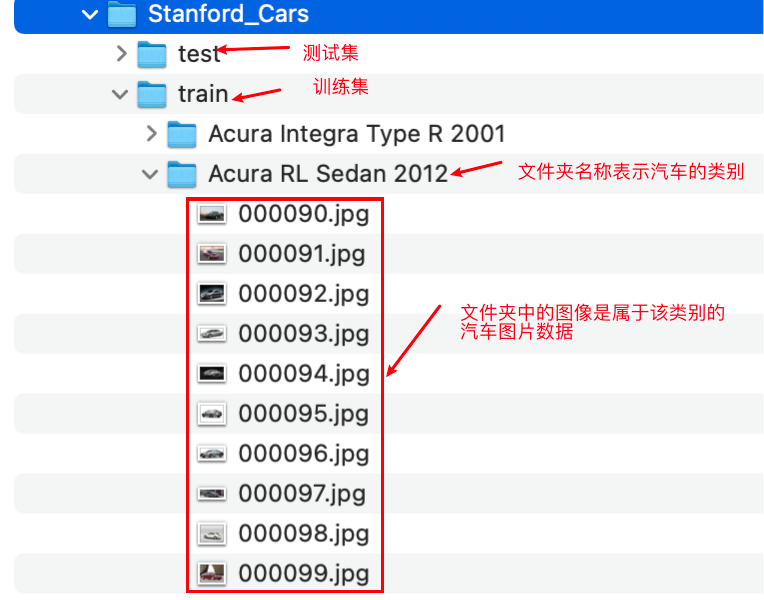
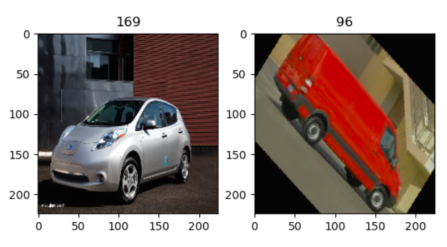
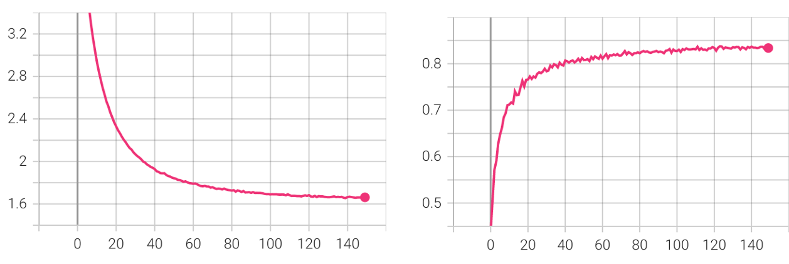
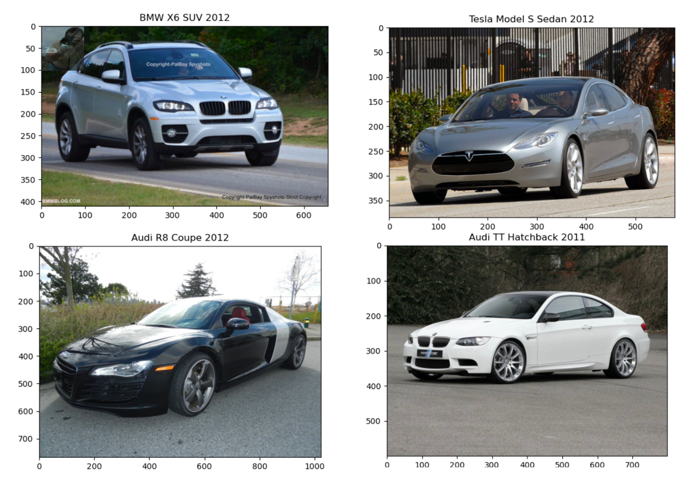

1.8 汽车车型分类案例¶
学习目标
- 知道数据增强的使用方法
- 能够实现模型微调的网络构建
- 能够实现模型训练
- 能够使用训练好的模型进行预测
1.背景介绍¶
随着城市车辆数量的日益增加，随着而来的社会问题越来越多，比如在全国多座城市存在的车辆拥堵现象、日益增多的交通事故，以及利用车辆进行犯罪等。车辆相关识别技术的发展为解决上述问题提供了帮助。目前，车辆相关的识别技术主要包括车牌、车标、车辆类型、车辆品牌和车辆型号(简称“车型”)识别，其中，车型识别是目前最具挑战性的课题，它不仅要求识别车辆类型(如：卡车、客车或越野车等)，还要求识别车辆具体的品牌和款式(如：奥迪A6L-2018款)，属于细粒度目标识别问题。深度学习中一些经典的网络，如VGGNet、GoogLeNet、ResNet等，均可实现对车辆型号的识别。在本案例中我们使用斯坦福汽车数据集训练ResNet模型，进行车型识别。
首先我们导入本案例所需的工具包：
# 导入相应的工具包
from torch import nn
import torch
from torchvision import transforms
from torch.utils.data import DataLoader
from torchvision.datasets import ImageFolder
import torchvision.models as models
2.数据集介绍¶
斯坦福汽车数据集（Stanford Cars Dataset） 是包含 196 种汽车类型的图像数据集，主要用于图像分类，其共有 16,185 张图像，其中训练图像和测试图像分别为 8,144 张和 8,041 张，每个类别的图像数量相当，其中分类基于汽车品牌、车型和年份，如：2012年特斯拉Model S或2012年宝马M3双门跑车。
数据集存放在dataset文件夹中，标注方式与鲜花数据集类似，具体如下所示：

我们将数据解析出来，首先指定数据集的路径：
# 指定数据集路径
cars_train_path = './dataset/Stanford_Cars/train/'
cars_test_path = './dataset/Stanford_Cars/test/'
2.数据增强及获取¶
在将数据送入网络中进行训练时需要将数据进行增强，我们采用几何增强和颜色增强的方式，如下所示：
# 图像增强方法
# 水平翻转
transforms_HF =transforms.RandomHorizontalFlip(p=0.5)
# 随机旋转
transforms_RR=transforms.RandomRotation(45)
# 尺寸调整
transforms_RS=transforms.Resize(size=(256,256))
# 颜色调整
transforms_color =transforms.ColorJitter(brightness=0.5, contrast=0.5, saturation=0.5, hue=0.2)
# 训练集增强方法的组合:首先转换为tensor,然后进行几何和颜色增强
train_transform = transforms.Compose([
transforms.ToTensor(),
transforms_HF,
transforms_RR,
transforms_RS,
transforms_color
])
# 验证集增强方法
test_transform = transforms.Compose([
transforms.ToTensor(),
transforms_RS,
])
接下来我们使用imageFolder获取数据集，如下所示：
# 获取训练集数据和测试集数据
cars_train = ImageFolder(cars_train_path, transform=train_transform)
cars_test = ImageFolder(cars_test_path,transform=test_transform)
并使用dataloader获取批量数据：
# 使用dataloader获取批量数据
batch_size = 2
train_loader = DataLoader(dataset = cars_train, batch_size = batch_size, shuffle = True)
test_loader = DataLoader(dataset = cars_test, batch_size = batch_size, shuffle = False)
我们将获取的数据进行展示：
import matplotlib.pyplot as plt
# 遍历每个迭代的数据，将其结果展示出来
for b, (imgs, targets) in enumerate(train_loader):
# 获取第一个batch的图像
if b == 1:
# 将其进行展示
fig, axes = plt.subplots(1, 2)
# 遍历batch中的每个图像
for i in range(batch_size):
# 图像显示出来
axes[i].imshow(imgs[i].permute(1, 2, 0))
# 设置图像标题
axes[i].set_title(targets[i].item())
plt.show()
elif b > 0:
break
展示结果如下所示：

3.模型构建¶
在这里我们使用imageNet的预训练模型进行微调，具体实现如下：
# 模型加载：进行模型微调，使用imageNet的预训练模型
model = models.resnet34(pretrained=True)
# 将所有的参数层进行冻结
for param in model.parameters():
param.requires_grad = False
#获取到fc层的输入
num_fc_ftr = model.fc.in_features
# 定义一个新的FC层，作为模型的输出层，进行车辆的分类
model.fc = nn.Linear(num_fc_ftr, 196)
将模型的最后一层的神经元个数改成车型的类别个数，就可以进行模型训练了。
4.模型训练¶
与前面的鲜花案例类似，我们定义训练过程中的评估方法和模型训练方法，如下所示：
# 学习率
learning_rate = 1e-3
# 训练轮数
num_epochs = 10
# 优化算法Adam = RMSProp + Momentum (梯度、lr两方面优化下降更快更稳)
optimizer = torch.optim.Adam(model.fc.parameters(), lr=learning_rate)
# 交叉熵损失函数
loss_fn = torch.nn.CrossEntropyLoss()
# 计算模型预测精度:测试集数据，模型
def evaluate_accuracy(data_iter, model):
total = 0
correct = 0
# 不进行梯度计算
with torch.no_grad():
# 模型是验证模式
model.eval()
# 获取每一个batch的数据，进行预测
for images, labels in data_iter:
outputs = model(images)
# 获取预测结果
_, predicts = torch.max(outputs.data, dim=1)
# 预测的次数
total += labels.size(0)
# 预测正确的个数
correct += (predicts == labels).cpu().sum()
break
# 获取准确率
return correct / total
# 定义模型训练过程:指定数据集，优化器，损失函数和轮次
def train(data_loader=train_loader,
optimizer=optimizer,
loss_fn=loss_fn,
epochs=num_epochs):
# 遍历每一个轮次进行训练
for epoch in range(epochs):
print('current epoch = {}'.format(epoch))
# 每一个轮次的损失，预测个数和预测正确个数的初始化
train_accuracy_total = 0
train_correct = 0
# 损失值的和
train_loss_sum = 0
# 迭代次数
iter = 0
for i, (images, labels) in enumerate(data_loader):
# 模型定义为训练模式
model.train()
# 对数据进行预测
outputs = model(images)
# 计算模型的损失
loss = loss_fn(outputs, labels)
# 在做反向传播前先清除网络状态
optimizer.zero_grad()
# 损失值进行反向传播
loss.backward()
# 参数迭代更新
optimizer.step()
# 求损失的和
train_loss_sum += loss.item()
# 输出模型预测结果
_, predicts = torch.max(outputs.data, dim=1)
# 获取训练集预测正确的个数
train_accuracy_total += labels.size(0)
train_correct += (predicts == labels).cpu().sum().item()
iter+=1
# 测试集预测的准确率
test_acc = evaluate_accuracy(test_loader, model)
torch.save(model.state_dict(), "./weights/model-{}.pth".format(epoch))
print(
'epoch:{0}, loss:{1:.4f}, train accuracy:{2:.3f}, test accuracy:{3:.3f}'
.format(epoch, train_loss_sum / (iter+0.01),
train_correct / train_accuracy_total, test_acc))
print('------------finish training-------------')
训练结果如下所示：
current epoch = 0
epoch:0, loss:5.2225, train accuracy:0.430, test accuracy:0.505
time:454.9108862876892
current epoch = 1
epoch:1, loss:4.4064, train accuracy:0.498, test accuracy:0.529
time:453.7942295074463
current epoch = 2
epoch:2, loss:3.9654, train accuracy:0.562, test accuracy:0.578
time:457.74895191192627
current epoch = 3
epoch:3, loss:3.6322, train accuracy:0.610, test accuracy:0.624
time:454.7437493801117
current epoch = 4
epoch:4, loss:3.3408, train accuracy:0.664, test accuracy:0.615
time:454.68416261672974
current epoch = 5
epoch:5, loss:3.1303, train accuracy:0.695, test accuracy:0.641
time:454.87048745155334
current epoch = 6
epoch:6, loss:2.9387, train accuracy:0.728, test accuracy:0.672
time:454.9037387371063
current epoch = 7
epoch:7, loss:2.7961, train accuracy:0.754, test accuracy:0.677
time:454.4555780887604
current epoch = 8
epoch:8, loss:2.6793, train accuracy:0.780, test accuracy:0.682
time:451.5388140678406
current epoch = 9
epoch:9, loss:2.5636, train accuracy:0.799, test accuracy:0.676
time:453.035516500473
我将batch_size设置为16，训练了150个轮次的的结果如下所示：（左图是损失函数的变换，右图是准确率的变换情况）

从图中可以看出随着训练轮次的增加，模型的拟合能力越来越好，验证集上的准确率也在不断的提高。
5.模型预测¶
模型预测过程中我们要加载训练好的模型，对图片数据进行预测，整个实现过程如下所示：
# 导入工具包
import glob
import os
from PIL import Image
# 加载训练好的模型参数
model.load_state_dict(torch.load("./weights/model.pth",map_location=torch.device('cpu')))
# 指定要预测的图像
file_path= "./car_image/"
# 对图像进行预测
with torch.no_grad():
# 指定模型为验证模式
model.eval()
# 获取图像的路径
image_paths = glob.glob(os.path.join(file_path, '*.jpg'))
# 遍历每一幅图像进行预测
for img_path in image_paths:
# 打开图片
img = Image.open(img_path)
# 增加batch维度
batch = test_transform(img).unsqueeze(0)
# 将图像送入网络中进行预测
outputs = model(batch).squeeze(0).softmax(0)
# 获取预测结果：类别索引
class_id = outputs.argmax().item()
# 获取预测结果：类别分数
score = outputs[class_id].item()
# 获取对应的类别名称
category_name = cars_train.classes[class_id]
# 预测结果的展示
plt.imshow(img)
plt.title(category_name)
plt.show()
我们将部分预测结果展示如下：

预测结果以图像标题的形式进行展示。
总结
- 知道数据增强的使用方法
- 能够实现模型微调的网络构建
- 能够实现模型训练
- 能够使用训练好的模型进行预测